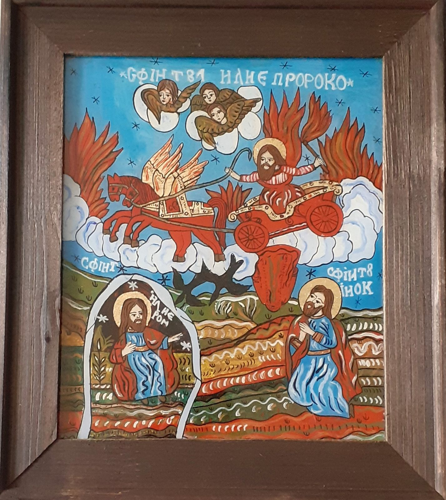

The workshop's story
About
Uneori suntem binecuvântați cu minuni venite-n viața noastră brusc, venite ca daruri din partea Divinității care ne zâmbește cu îngăduință privind la uimirea noastră...
Nu foarte multe minuni s-au întâmplat în viața mea, au fost puține dar năucitoare! Cea mai recentă s-a întâmplat în 2019, în ziua Bunei Vestiri, o zi sfânta în care am început să pictez icoane pe sticlă.
Nu știam foarte multe despre icoanele pictate pe sticlă de minunații noștri țărani ardeleni, despre sufletul lor, despre tehnica lor unică în lume de-a picta scene religioase în culori vii, cu decoruri supradimensionate și în reprezentări care îmbinau viața lor reală cu scenele biblice...Iar eu nu pictasem niciodată până în acea zi!
A fost începutul! Am pictat de atunci aproximativ 250 de icoane care acum se află în mare parte în colecții particulare ale unor persoane publice sau persoane obișnuite (cu toții - oameni deosebiți), în câteva biserici și câteva mănăstiri din România.
Mulțumesc Domnului pentru această minune din viața mea și pentru că mi-a dăruit un sens extraordinar restului vieții mele!